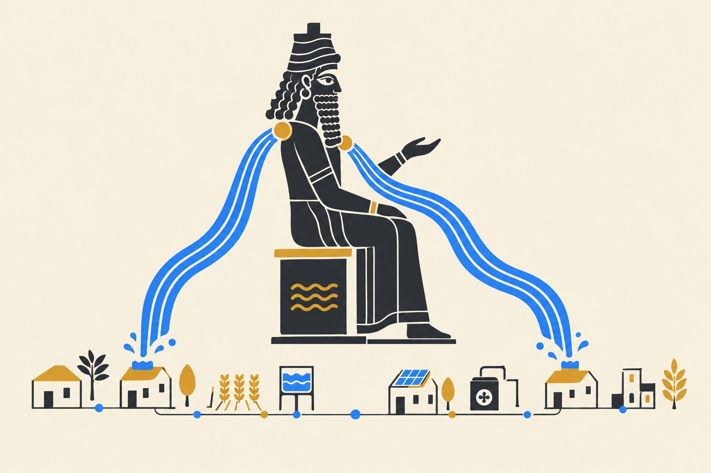
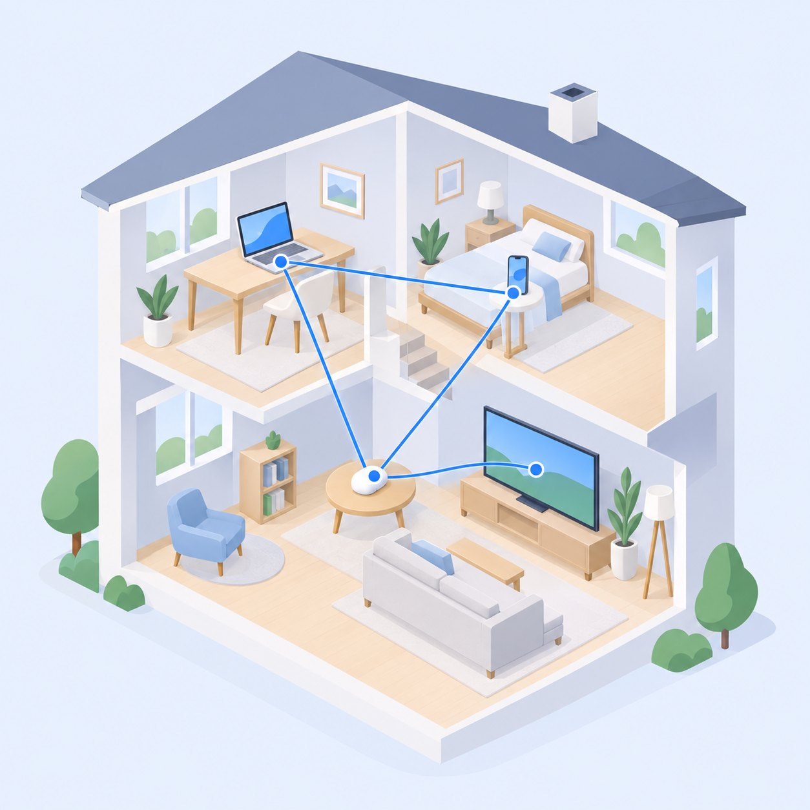
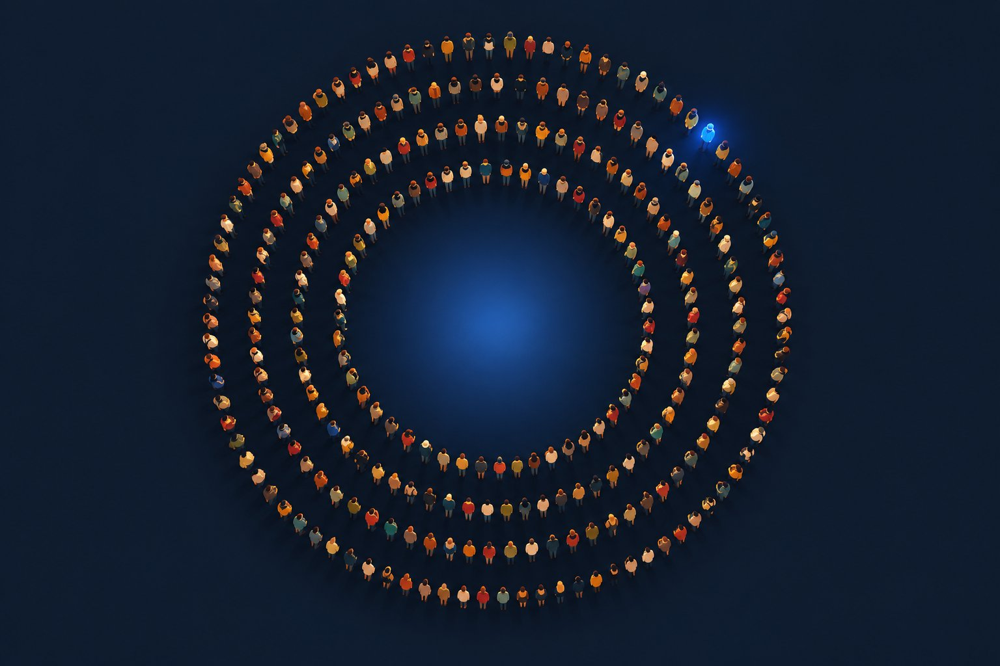

Intelligence, owned by everyone.
300 people, no fee, one vote each — writing the manifesto, the open blueprints and the international standard that put AI back on hardware you own.

That is one year of hyperscaler datacenter capex — spent so that intelligence lives in a warehouse owned by five companies and is rented back to you by the token. Meanwhile the hardware in your home got good enough to carry the everyday tier itself.
Five fronts. One goal:
local-first intelligence.
A letter on the state of intelligence
Ten articles and a postface: why the frenzy is wrong, and a financeable local-first plan — fully referenced, 86 sources.
Read the manifesto →
A datacenter in your pocket
One ceramic pebble, no screen, one brass button — open MIT blueprints anyone can mass-produce.
Meet the device →
One standard away
Four clauses that make every GPU and NPU device a citizen of your home mesh — the way USB-C ended the cable wars.
Read the standard →
Open weights, honest costs
50 open models we trust, from org servers to phones, with real hosted and self-host prices. Nothing is “free” — the registry keeps the receipts.
Browse the registry → 05 · The instituteUnderstand the shift. Then steer it.
Socio-economic research on what AI does to work, wealth and power — carried by the Advisory into rooms where policy is written.
Visit the institute →Split intelligence in two — and society gets a dial.
Superintelligence stays in declared datacenter silos — its access offered progressively, under heavy regulation, so its impact on society is a decision, not an accident. Everyday intelligence runs decentralised and local, effectively free, everywhere around us — covering 99% of what humans and organisations actually need.
Superintelligence — siloed and metered
Confined to known datacenters under international rules. Opened step by step — by licence, by sector, by audit — and unpluggable in an emergency without taking daily life down with it.
Controlled rolloutEveryday intelligence — everywhere, local
Small open models on your own hardware and the local mesh — in homes, schools, clinics and companies, improving every year. The 99% of what people actually ask of a machine.
Deployed everywhere
300 seats. No fee.
One vote each.
299 members plus the founder — selected on merit alone: skills, networks or capital. DAO-signed votes, an annual 10% audit, and a 3× median-income compensation cap.
Apply to join“We are not against intelligence. We are against the idea that intelligence must live in a warehouse owned by five companies, guarded by two governments, and rented back to humanity by the token.”Read the manifesto